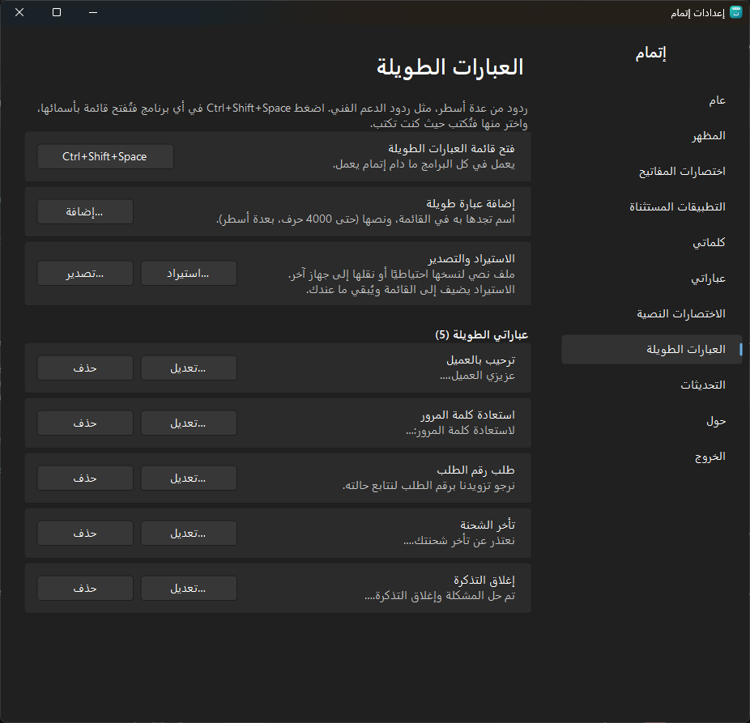
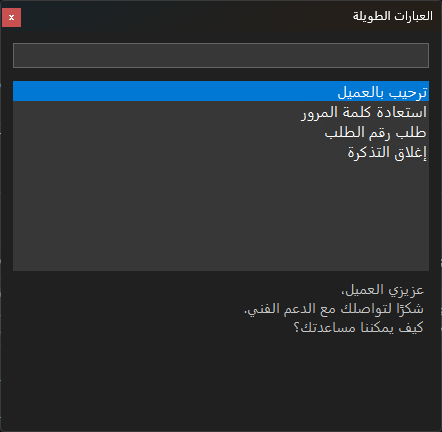
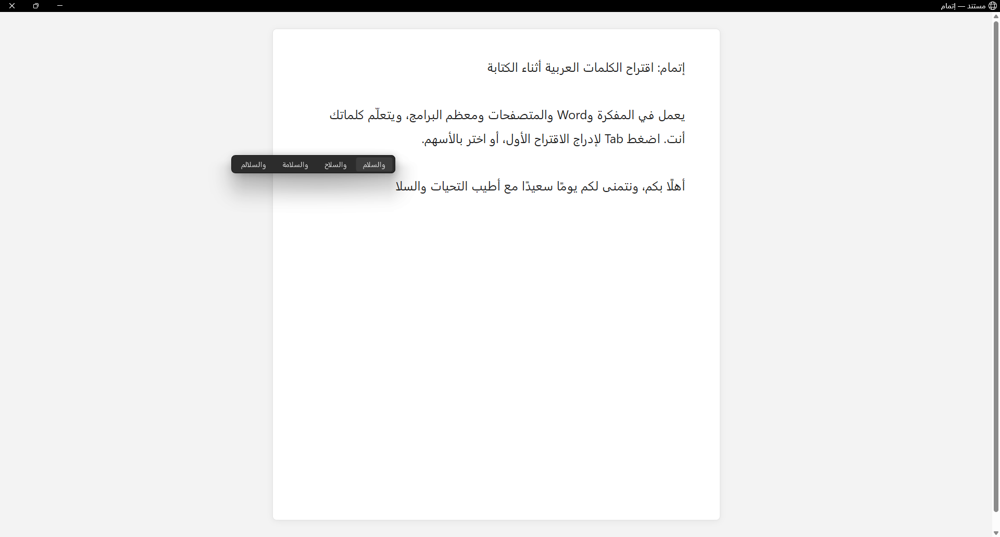
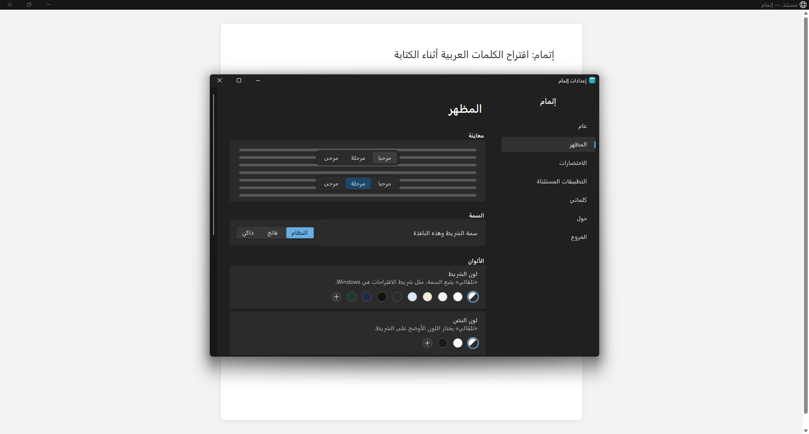

اكتب أوّل الكلمة،
ويُتمّها لك.
اقتراحات عربية فوق المؤشر في أي برنامج، من قاموس بنحو 880 ألف كلمة، ويتعلّم كلماتك أنت.
مجاني ومفتوح المصدر · Windows 10 (2004) وWindows 11 · x64 وARM64
صُنع للكتابة العربية
ليس مدقّقًا إملائيًا ولا لوحة مفاتيح على الشاشة: شريط صغير يظهر فوق المؤشر وأنت تكتب بلوحة مفاتيحك، كما في الهاتف.
في كل برنامج
المفكرة وWord والمتصفحات ومعظم البرامج، دون أي إعداد.
يفهم الهمزات واللواصق
«احمد» تجد «أحمد»، و«ان» تقترح «أن» و«إن» و«أنا»، مع «ال» وحروف العطف والجر.
يتعلّم كلماتك
الكلمة التي تستعملها مرتين تصبح من اقتراحاته، والأكثر استعمالًا يأتي أولًا.
يكمل من وسط الكلمة
ارجع إلى كلمة بالنقر أو Backspace، فيكملها من حيث يقف المؤشر.
بشكل Windows 11
شريط يتبع الوضع الفاتح أو الداكن، بالألوان والحجم والعتامة التي تختارها.
صامت حيث يجب
لا يعمل في حقول كلمات المرور، ولا في التطبيقات التي تستثنيها، ولا في الألعاب بملء الشاشة.
يكمل العبارات
نحو 250 عبارة متلازمة مثل «بسم الله الرحمن الرحيم» كاملةً بضغطة Tab، ويتعلّم العبارات التي تكررها.
اختصارات نصية
اكتب «ع1» فيقترح «السلام عليكم ورحمة الله وبركاته»، باختصاراتك أنت.
عبارات طويلة
ردود من عدة أسطر، مثل ردود الدعم الفني، تختارها بالاسم من قائمة تفتحها باختصار في أي برنامج. التفاصيل
يصحح الأخطاء الشائعة
«لاكن» ← «لكن»، و«انشاءالله» ← «إن شاء الله»، و«مدرسه» ← «مدرسة»، ولا يُستبدل شيء إلا بطلبك.
تراجع بضغطة
أدرجت كلمة لم تقصدها؟ Backspace مباشرة يعيد ما كتبته.
أنت تقرر من الشريط
بالزر الأيمن على اقتراح: احذفه، أو احظر الكلمة، أو أضف العبارة إلى عباراتك.
قاموس ويكيبيديا
قاموس أكبر يضم القاموس الأساسي كاملًا ومفردات ويكيبيديا العربية للكتابة الرسمية والمصطلحات، تختاره من الإعدادات.
نسخة احتياطية شاملة
كلماتك وعباراتك واختصاراتك وإعداداتك في ملف واحد، لتنقلها إلى جهاز جديد.
إحصاءاتك
كم كلمة أكمل إتمام، وكم حرفًا كتب عنك. أرقام فقط، لا شيء مما تكتبه.
العبارات الطويلة: ردود جاهزة للدعم الفني
من يرد على العملاء يكتب الردود نفسها عشرات المرات في اليوم: الترحيب، وطلب رقم الطلب، وخطوات استعادة كلمة المرور، وإغلاق التذكرة. احفظ كل رد مرة واحدة باسم، ثم أدرجه بضغطة اختصار في أي برنامج تكتب فيه، بأسطره كاملة.
-

١اكتب الرد مرة واحدة
من الإعدادات ← «العبارات الطويلة» ← «إضافة»: اسم قصير تعرفه به، ونص الرد بعدة أسطر حتى 4000 حرف. وتعدّله أو تحذفه متى شئت.
-

٢اضغط الاختصار حيث تكتب
في البريد أو واتساب ويب أو نظام التذاكر أو أي برنامج آخر، اضغط Ctrl + Shift + Space فتُفتح قائمة بأسماء ردودك. اكتب جزءًا من الاسم أو النص لتصفيتها، وترى معاينة الرد قبل إدراجه.
-
السلام عليكم، عندي مشكلة في طلبيعزيزي العميل،
شكرًا لتواصلك مع الدعم الفني.
كيف يمكننا مساعدتك؟٣اضغط Enter
يُلصق الرد حيث كان المؤشر، بأسطره كما كتبتها، ثم يعيد إتمام إلى الحافظة ما كان فيها، ولا يظهر الرد في سجل الحافظة.


لماذا يحتاجها فريق الدعم الفني؟
- أسرع ردرد من عدة أسطر بثلاث ضغطات، بدل كتابته من جديد أو البحث عنه في ملف ونسخه.
- صيغة واحدة للفريقصدّر الردود المعتمدة إلى ملف نصي، واستوردها على أجهزة الزملاء، فيرسل الجميع الرد نفسه. والاستيراد يضيف إلى ما عند كل واحد ولا يحذف منه.
- بلا أخطاء أمام العميلالنص يُراجع مرة واحدة عند حفظه، فلا أخطاء إملائية ولا خطوة ناقصة في ردود تتكرر كل يوم.
- في كل البرامجلا يحتاج ربطًا بنظام الدعم ولا إضافة للمتصفح: يعمل حيث تكتب، في البريد والمحادثات وأنظمة التذاكر.
- تجدها بالبحثالقائمة تُصفّى بالاسم أو بأي كلمة من النص، وتتنقل فيها بالأسهم، فلا حاجة للفأرة.
- على جهازك فقطالردود محفوظة في إعدادات إتمام على جهازك، بلا حساب ولا خادم ولا اشتراك، وتدخل في النسخة الاحتياطية الشاملة.
من لوحة المفاتيح، دون الفأرة
الاختصارات قابلة للتغيير من الإعدادات.
| Tab | إدراج الاقتراح الأول |
| Ctrl + 1…9 | إدراج الاقتراح برقمه |
| ↑ ثم ← → ثم Enter | الاختيار بالأسهم ثم الإدراج |
| Esc | إخفاء الاقتراحات حتى الكلمة التالية |
| Backspace | مباشرة بعد الإدراج: التراجع عنه |
| Ctrl + Shift + Space | قائمة العبارات الطويلة في أي برنامج |
| Ctrl + Alt | إيقاف إتمام وتشغيله من أي مكان (اضغط ثم أفلت) |
كما يبدو على شاشتك
لقطات حقيقية من التطبيق.


جهازك شيء
خصوصيتك قبل كل شيء
- إتمام نفسه لا يتصل بالإنترنت: لا إحصاءات ولا تقارير أعطال. يسأل متجر Microsoft عن التحديثات فقط، ويمكنك إطفاء ذلك.
- لا يحفظ ما تكتبه. يُحفظ لكل كلمة: الكلمة وعدد مرات استعمالها ووقت آخر استعمال فقط، والعبارات القصيرة التي تكررها مع عددها، على جهازك.
- لا يقرأ شيئًا من حقول كلمات المرور ولا من التطبيقات المستثناة.
- الشيفرة المصدرية مفتوحة: يمكن لأي أحد أن يتحقق بنفسه.
ساعدنا في تحسين إتمام
وجدت مشكلة؟ اكتب لنا على GitHub (يحتاج حسابًا مجانيًا)، أو راسلنا على nasmn77@gmail.com. ولا تلصق نصوصًا خاصة في البلاغ.